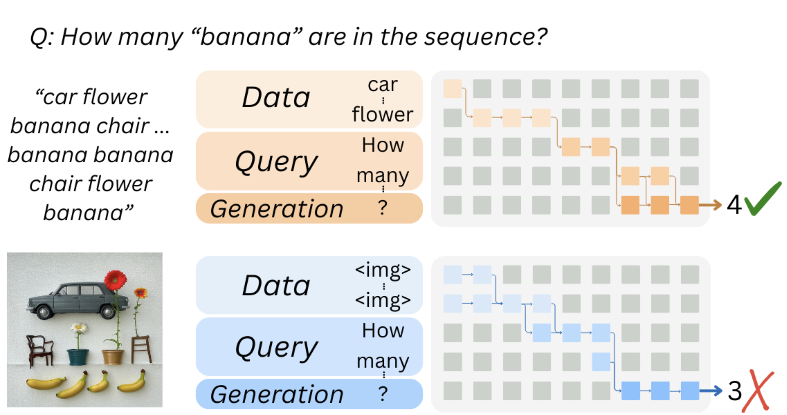
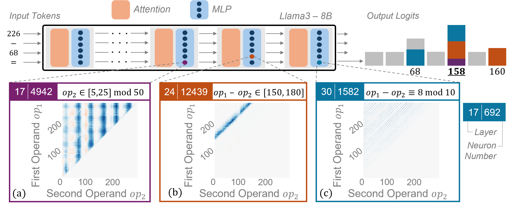
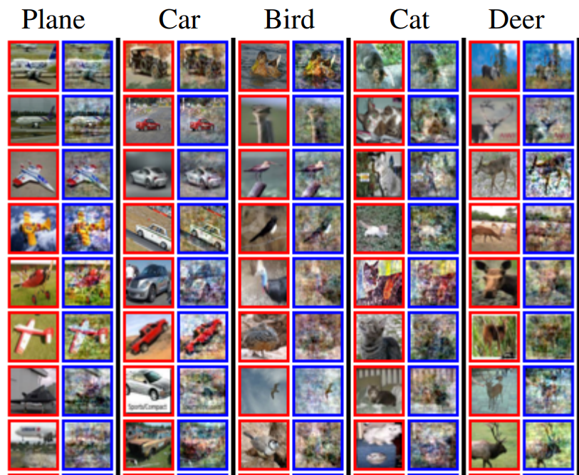

I'm a PhD student at the CS NLP lab at the Technion,
advised by Prof. Yonatan Belinkov.
I like digging into complex mechanisms, and currently work on
scaling up mechanistic interpretability of neural networks across language, vision and biology.
I'm particularly interested in developing more robust interpretability techniques and applying them to complex tasks,
with the ultimate goal of building better models that can be automatically interpreted.
I completed my M.Sc under the supervision of Prof. Michal Irani,
and prior to that I've worked as a software engineer in industry and received my B.Sc in Computer science.
Selected Publications
Visit my Google Scholar for a full list of my publications.
-

Same Task, Different Circuits: Disentangling Modality-Specific Mechanisms in VLMs
- Yaniv Nikankin, Dana Arad, Yossi Gandelsman and Yonatan Belinkov
- NeurIPS 2025
-

Arithmetic Without Algorithms: Language Models Solve Math With a Bag of Heuristics
- Yaniv Nikankin, Anja Reusch, Aaron Mueller and Yonatan Belinkov
- ICLR 2025
- 
-

SinFusion: Training Diffusion Models on a Single Image or Video
- Yaniv Nikankin, Niv Haim and Michal Irani
- ICML 2023
Recent News
- Dec 2025: I will be visiting Boston and giving talks at the Kempner institute, Northeastern, MIT and BU. Feel free to join and contact me if you're in the area!
- May 2025: Our mechanistic interpretability benchmark, MIB, was accepted to ICML2025!
- Apr 2025: Our work on arithmetic mechanisms in LLMs was featured in HaAretz newspaper.